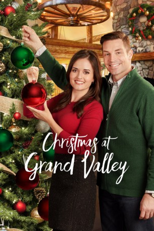

#12249 Weihnachten in Grand Valley
 
 IMDB-Wertung: 6.4 / 10
IMDB-Wertung: 6.4 / 10  Metascore: 0
Metascore: 0 
Malerin Kelly hat in Chicago keinen Erfolg. Sie fährt zu Weihnachten nach Hause zu ihrem Vater und bietet dort Kindern Malunterricht an. Der verwitwete Leo reist mit seinen Kindern ebenfalls nach Grand Valley. Ursprünglich aus geschäftlichem Interesse dorthin gefahren, kann auch er sich dem Zauber des Ortes nicht entziehen. Beide finden zueinander. Auch ein zweites Paar schafft es, sich zu Weihnachten gegenseitig endlich seine Liebe zu gestehen.
Jahr: 2018
Dauer: 80 Minuten
FSK:
Land: USA Studio: Hallmark ChannelTonspuren:
Untertitel:
Auflösung: 720p (1280x720) Größe: 1925 MB
Genre: Liebe, Weihnachten
Regisseur: Don McCutcheon
Drehbuch: Mark Amato, Karen Berger, Sue Tenney
Soundtrack: Dan Radlauer
Darsteller:
 Danica McKellar als Kelly
Danica McKellar als Kelly- Brennan Elliott als Leo
 Dan Lauria als Frank
Dan Lauria als Frank- Hattie Kragten als Emma
- Gage Graham-Arbuthnot als Max
 Chad Connell als Mike
Chad Connell als Mike- Zarrin Darnell-Martin als Lucy
- Angela Asher als Vera
- David Keeley als Darren
 Kenny Wong als Jarrod
Kenny Wong als Jarrod- Catherine Burdon als Sylvia
- Tara Samuel als Toni - Leo's sister
- John Clifford Talbot als Pete / Santa Claus
- Chris Farquhar als Sylvia's Assistant
- Justin James Remeikis als Caroler
- Mahaila McKellar als Woman at tree ceremony (uncredited)
- Maden Moon Moorhouse als Barry
- Renee Frappier als Caroler (1 of 4)
- Michelle Jackett-Webster als Caroler (2 of 4)
- Draco McKellar Verta als Boy at tree ceremony (uncredited)
Datei: X:\2018(N-Z)\Weihnachten in Grand Valley (2018, FSK, 1280x720).mkv seit 03.01.2020
Festplatte: HD 2018(G-Z)-2019(A-Z)
 Es gibt insgesamt 172 Filme in der Gruppe '2018(N-Z)'
Es gibt insgesamt 172 Filme in der Gruppe '2018(N-Z)'